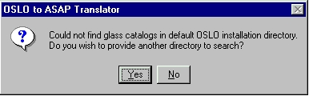

The final step in the translation process is to choose how the translator deal with refractive indices. (In the following discussion, the term “glass” refers to any refractive material including glass, plastics, crystals, and other refractive materials.)
The translator writes the glass name(s) into the INTERFACE command of each object in the ASAP file. In those cases where you have specified an optical glass from the Schott, Hoya, Ohara, or Corning glass catalogs, ASAP refers to its own database and computes the required refractive indices. Otherwise, you need to edit the translated ASAP file to insert the proper refractive index information. (Default: do not attempt to include refractive index information in ASAP file.)
The translator goes to the default OSLO installation directories (c:\oslsix51\bin\glc\ for OSLO SIX, c:\oslpro51\bin\glc\ for
OSLO PRO, and c:\olight51\bin\glc\ for OSLO Light) to
try to find the glass catalogs (schott.glc. ohara.glc, hoya.glc,
corning.glc, misc.glc, shared.glc, and obsolete.glc). If it is successful,
the translator searches the catalogs for each glass found in the OSLO LEN
file and computes its refractive indices according to the OSLO database and
the currently defined wavelengths. These data are then written to the ASAP
file. If the translator cannot locate the glass catalogs within the default
installation directories, it displays the following message box asking
whether you would like to provide another directory to search:

If you respond “Yes”, the translator displays a File Open dialog so you can Browse for the OSLO glass catalogs. Selecting any of the glass catalogs from within this dialog sets the path for the translator. If, on the other hand, you respond “No” to the message box or cancel the File Open dialog, the translator displays another message box informing you that no directory has been specified, and that it not attempt to compute refractive indices for the ASAP file.
At the completion of this dialog, you have the option to go Back to the first dialog, Finish, or Cancel and terminate the translator.